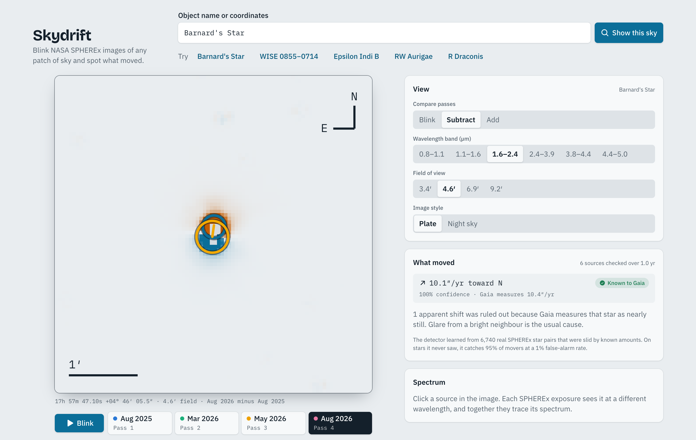
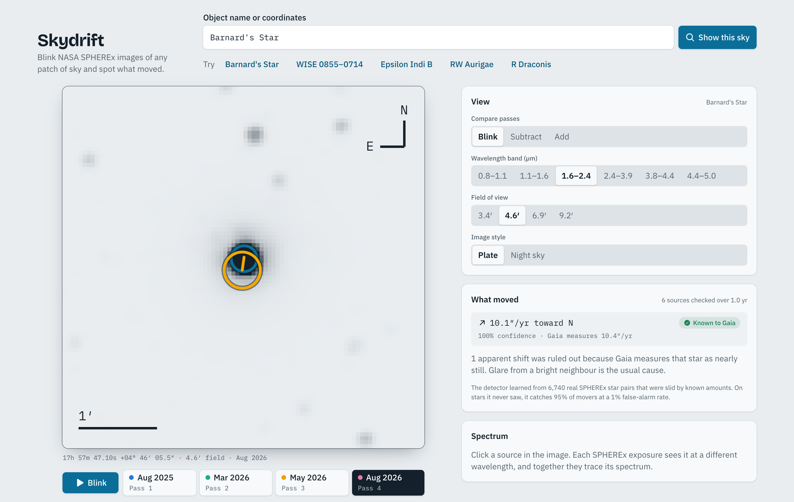
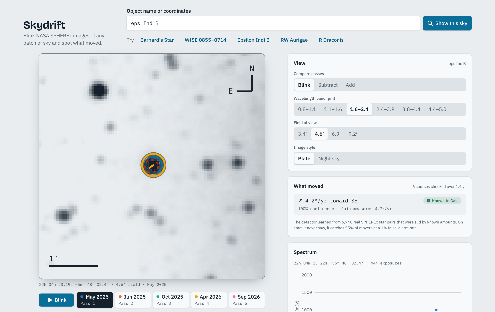

Blink NASA SPHEREx images of any patch of sky and spot what moved.

Things that are close to us move against the background stars: asteroids, comets, nearby stars, brown dwarfs, maybe an undiscovered planet. The way to find them is to compare images taken at different times.
SPHEREx has been photographing the whole sky in 102 infrared colours since 2025. That is more than a billion objects, far too many for any team to check.
The challenge: a public web tool where anyone enters a position and watches that patch of sky change over time.
On hackathon weekend the archive's search service was down. Skydrift does not use it.

Barnard's Star, the fastest-moving star in the sky.
Skydrift: 10.1″/yr north
Gaia: 10.4″/yr north
No archive query service needed. The tool kept working while the usual search was offline.
New data release? One command. The indexer skips the weeks it has already read.
NASA data used: SPHEREx Level 2 spectral images (DR1, QR3) and spectral WCS calibration, from NASA/IPAC IRSA.
A small neural network looks at each source in the first and last survey pass and answers: did it move, and by how much?
Training: 6,740 real SPHEREx star pairs. Half are slid by a known sub-pixel offset, so every fake mover has a real point-spread function, real noise and real brightness changes.
Guard rail: if Gaia says a flagged star is still, Skydrift says so and drops it.
All five challenge targets pass. WISE 0855−0714, a brown dwarf Gaia cannot see, is flagged at 8.0″/yr (published: 8.1″/yr).
Of 2,130 other sources in those fields, 10 were flagged (0.5%), before the Gaia check. Stars that moved less than half a pixel are below what 18 months of SPHEREx can show.

Each SPHEREx exposure sees a source at a different wavelength. Skydrift measures the source in every exposure and plots flux against wavelength, coloured by survey pass.
A star that changes brightness shows up as passes that do not overlap. A cold brown dwarf shows up as a spectrum that only rises past 4 µm.
Epsilon Indi B, a pair of brown dwarfs 12 light-years away.
Skydrift: 4.2″/yr southeast
Gaia: 4.7″/yr southeast
Today one pair of passes shows motion faster than about 1.5″ per year. Each new pass lengthens the baseline, so slower and fainter movers come into reach.
For volunteers: a flagged source that Gaia does not list is exactly what projects like Backyard Worlds ask people to look at. Skydrift hands them a link to it.
Next: combine all six bands for fainter sources, track a mover across every pass instead of two, and overlay WISE positions for a 15-year baseline.
Data: NASA SPHEREx (NASA/IPAC IRSA), ESA Gaia DR3, CDS Sesame.
Built by Tarun Yadgirkar + Claude. The mover detector was trained for this project on SPHEREx data.
Team Skydrift · Tarun Yadgirkar · Planet X and SPHEREx